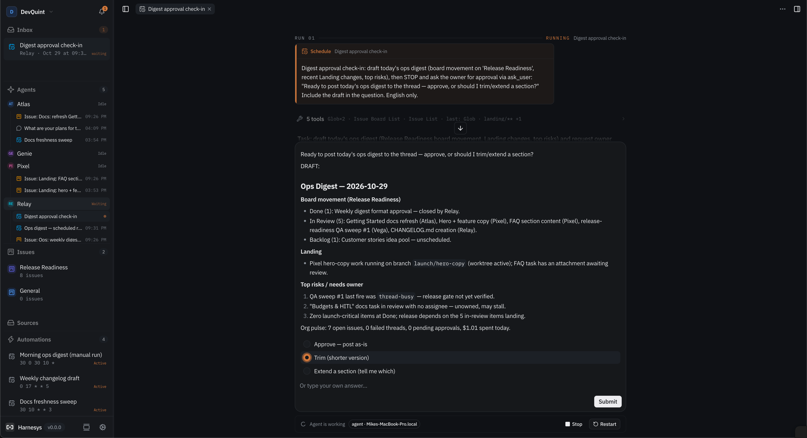
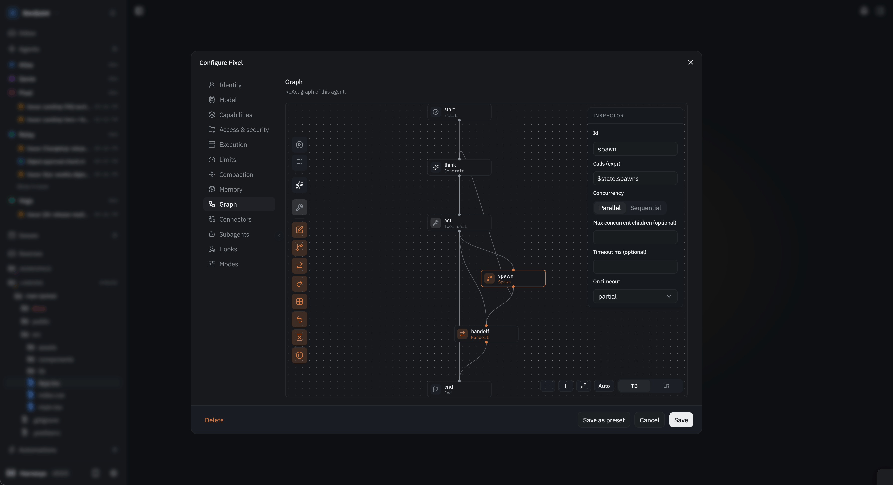
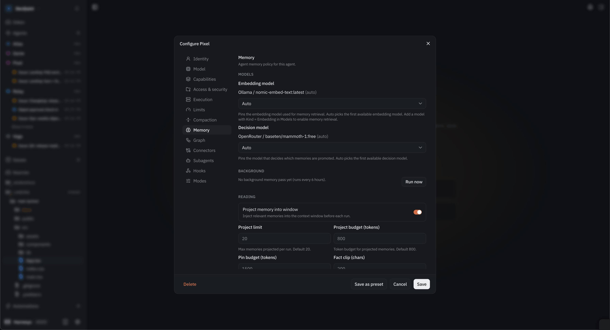
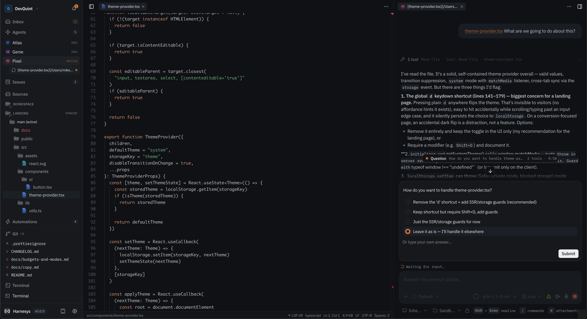
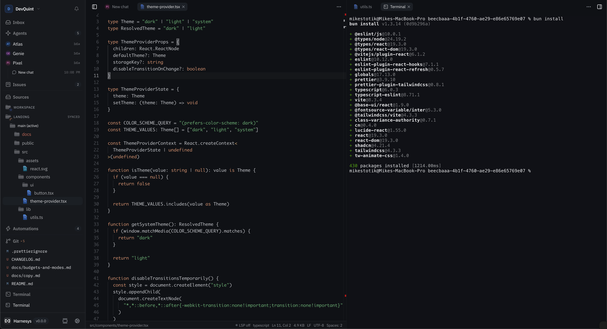
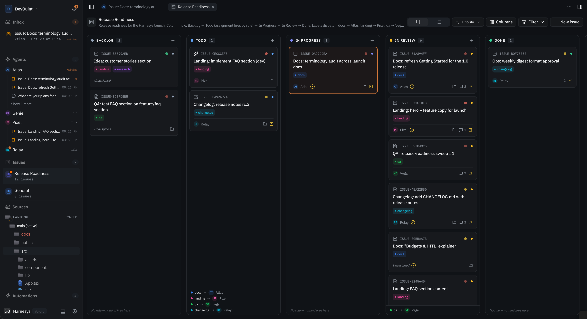

Runs you can audit
Every tool call with its input and exit code, per-turn token counts, attachments, and question cards when an agent needs your call. Nothing happens off the record.
A control plane for your agent team
Harnesys runs a team of AI agents on your own machines and gives you one desk to supervise them: every run in front of you, every sensitive step waiting for your decision.
Every tool call lands in the transcript. File writes, shell and network wait at permission gates — allow once, for the run, or always.
# Download the desktop app for your platform
# macOS DMG · Windows NSIS · Linux AppImage / .deb
https://github.com/harnesys/harnesys/releases
Projects live on separate machines and pair into one fleet. A coordinator agent assigns the work, and decisions come back to you as cards. Journal, gates and inbox are shared across the whole fleet.
A working desk where your agent team shares the same files, the same shell and the same board.
Every tool call with its input and exit code, per-turn token counts, attachments, and question cards when an agent needs your call. Nothing happens off the record.
Presets for agents and whole teams, a visual graph editor, and a config dialog with thirteen categories: model, limits, compaction, memory, subagents, hooks, modes. Budgets cap steps and tokens before a run goes sideways.
When the work is code, files, editor, git and real PTY terminals sit next to the chat — the agent edits the same files you see. When it isn’t, you never have to open them.
Cron schedules, webhook triggers, and label rules on the issue board that hand new work to the right agent. Anything that needs a decision waits in the inbox.
Pins keep rules in context, facts are promoted from episode logs, and knowledge roots get hybrid full-text and vector search. Agents remember between runs.
Skills load on demand and agents can author their own. Plugins
install from git and npm. MCP servers plug in per org or per
project from a standard mcp.json. Hooks fire on 19
agent lifecycle events.
Draw the pipeline on a canvas: LLM steps, tool calls, spawn and handoff between agents, map fan-outs with parallel or sequential concurrency, and interrupts where a human answers. Thirteen config categories sit behind every agent — from identity to permission modes.


One of the built-in mechanisms, there when you need it: a file explorer with per-line git status, an editor with LSP, commit diffs, and real PTY terminals you can type into. The agent sees the same files — and asks before writing.


Cron schedules bind an agent, a thread and a permission mode. Webhooks wake threads over HTTP. On the issue board, a label rule hands new work to the right agent — docs to one, QA to another — and column moves fire assignments on their own.

No cloud account, no prerequisites. One download, one model key, first agent in minutes.
Grab the macOS DMG (Apple silicon and Intel), Windows NSIS (x64 / ARM64), or Linux AppImage / .deb from GitHub Releases. The host ships as a sidecar inside the desktop app. First launch on macOS: right-click the app and choose Open; the build is not notarized.
https://github.com/harnesys/harnesys/releasesThe app starts a local host on loopback and opens the desk UI. Your data stays in your home directory.
Open Harnesys → host on 127.0.0.1:47474Pick a provider from the catalog — OpenAI, Anthropic, Google, OpenRouter, Groq, a local Ollama and more — or point at any OpenAI-compatible endpoint.
Settings → Models → Add providerPick a preset or draw a graph, write the task in chat, and approve the steps you care about. Gates go from allow to deny per operation: file writes, shell, network, MCP, agents.
mode: ask · fs.write: ask · process: askPair more machines with the CLI, or run the server and web UI in Docker. Schedules and label rules take over the routine; the inbox collects what needs you.
harnesys host invite → harnesys host enrollDesktop apps for macOS (Apple silicon & Intel), Windows (x64 & ARM64) and Linux. Server binaries and the web UI for headless setups.
# Pair a worker machine with your relay
harnesys login <relayUrl>
harnesys owner init
harnesys host invite --org <orgId> --name <nodeName>
harnesys host enroll <relayUrl> <code> --org <orgId> --name <nodeName>
# Diagnostics and relay maintenance
harnesys host doctor
harnesys host retarget --org <orgId> <newRelayUrl>Static CLI and server binaries (harnesys, harnesys-host, harnesys-web) for Linux and macOS, x64 and arm64, are on the Releases page, together with client-dist.zip for serving the web UI yourself. Relay-to-worker role transfer is built in: host promote.
docker compose -f deploy/docker-compose.yml up -dHost and web UI in two containers over one volume. An optional SearXNG profile keeps web_search queries on your own infrastructure.
Desktop apps run the host as a sidecar behind the UI and auto-update via signed releases. Everything else — CLI, server binaries, client bundle — is on the Releases page.